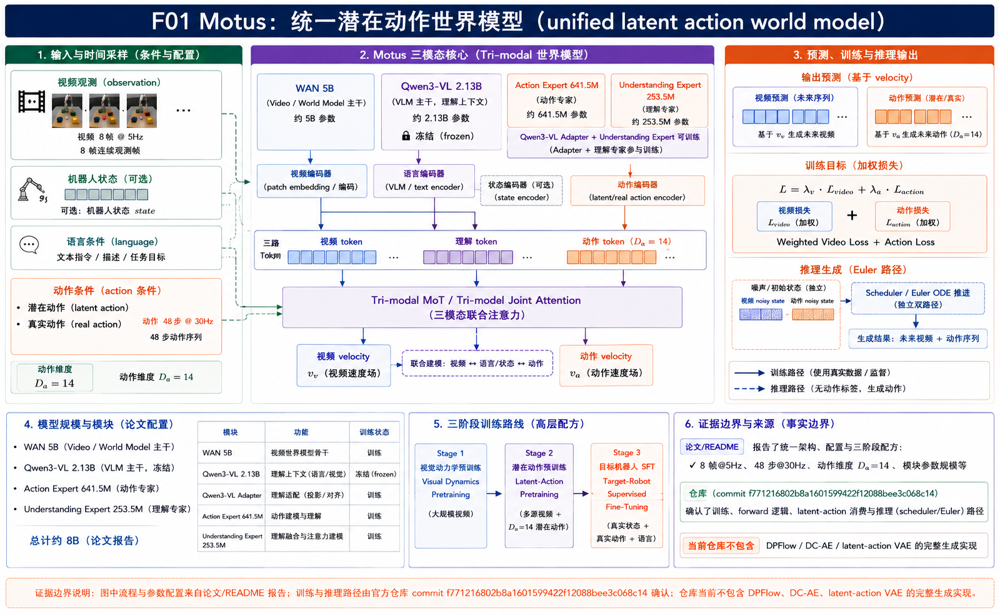
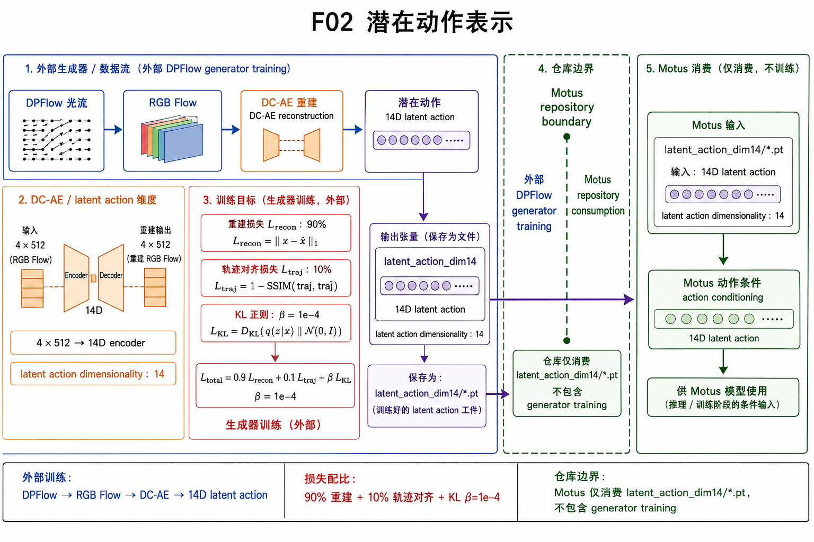
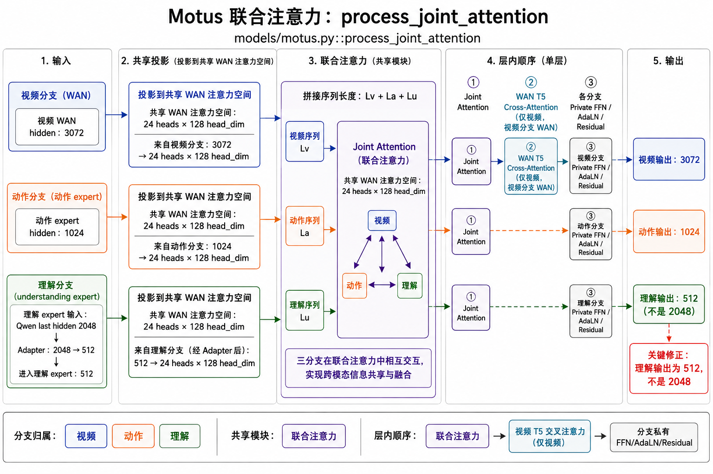
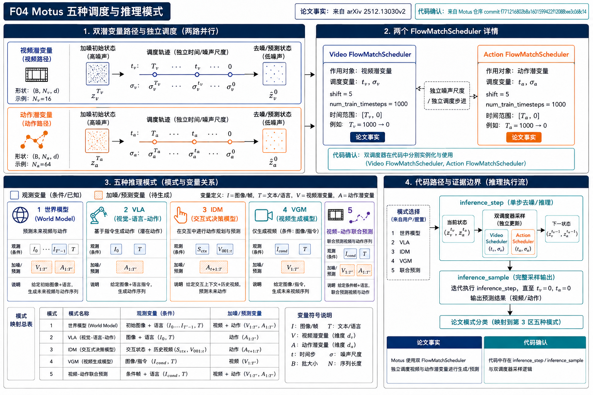
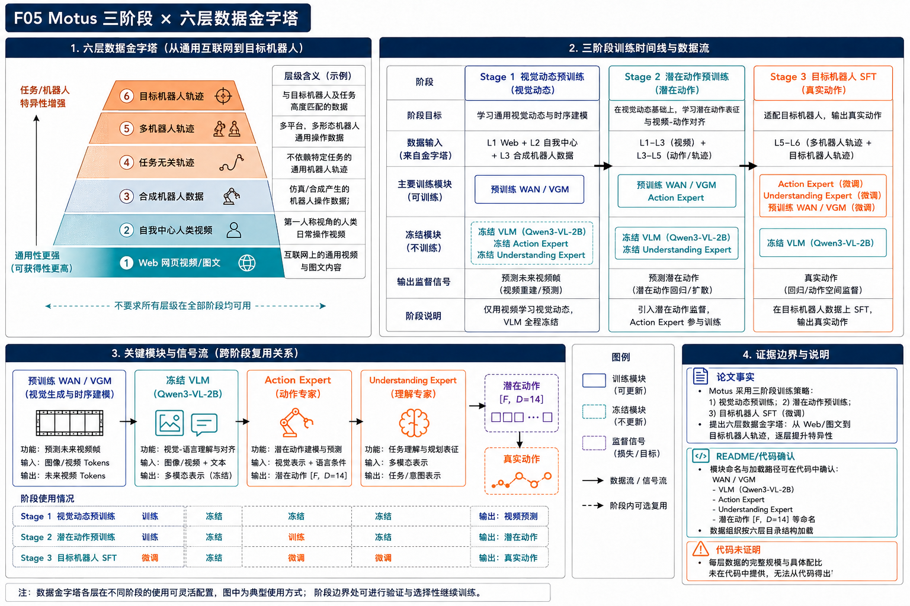
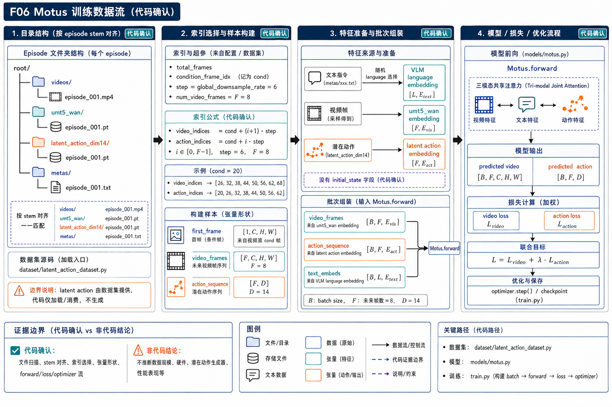
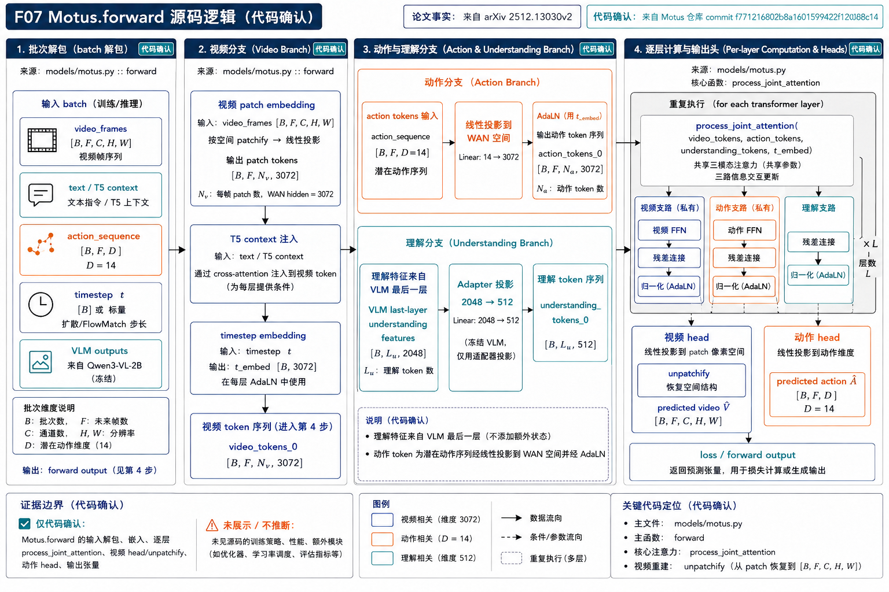
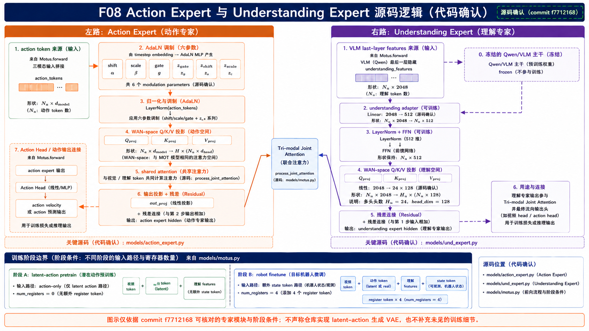
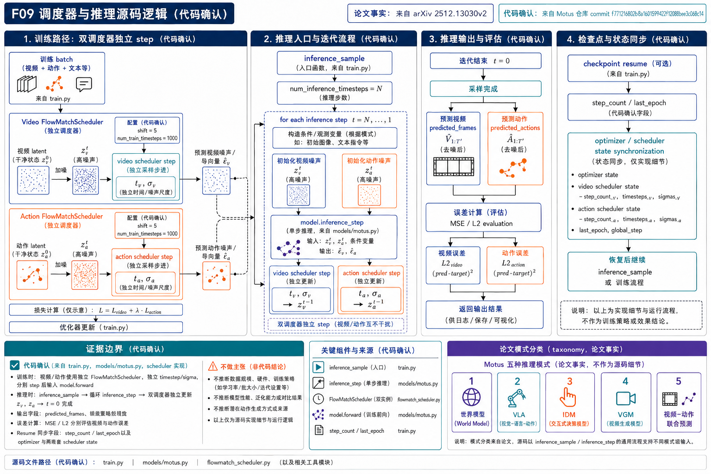

一句话结论：Motus 将 Wan2.2 视频生成先验、Qwen3-VL 理解先验和一个 14 维动作专家放入 Mixture-of-Transformers；三者只共享跨模态注意力的交互通道，各自保留专用归一化、FFN 和输出头，再用两个独立的 flow-matching 时间轴把视频预测、动作预测及其联合分布放进同一网络。它的关键工程价值不在“又一个 VLA 头”，而在于把可想象的视觉后果和可执行的动作 chunk 绑定成同一个条件生成过程。
论文元信息与证据边界
作者为 Hongzhe Bi 等，来自清华大学、北京大学和地平线机器人。论文链接为 arXiv 2512.13030，项目页为 motus-robotics.github.io/motus，官方代码为 github.com/thu-ml/Motus（Apache-2.0）。本报告的论文事实来自本地 `paper.pdf`/`paper.html`；源码事实来自本地官方仓库及固定 commit。
为什么要统一五种分布
传统 VLA 只学习“看到当前画面和指令后输出动作”，世界模型只学习“给定动作后预测未来画面”，IDM 反过来从画面序列推断动作，VGM 只生成视觉未来，视频-动作联合模型则同时生成两种未来。论文把它们写成五个条件分布：VLA (p)、WM (p(o_{t+1:t+k}|o_t,a_{t+1:t+k}))、IDM (p(a_{t+1:t+k}|o_{t:t+k}))、VGM (p)、联合预测 (p)。统一的好处是同一个模型可以在不同条件变量被“钉死”或被加噪时切换模式，而不是维护五套参数。
这里的速度场目标是 flow matching 的直线方向：噪声点 (epsilon) 到干净样本 (x) 的差向量。直观地说，模型每次不直接猜最终画面/动作，而是猜“当前点应该往哪里移动”；采样器再把许多小位移累加起来。
Motus 总览：三专家如何共存

全部细节
- 左侧条件包括首帧 (o_t^0)、语言 ℓ、可选 proprioception；中部三路分别是 Wan2.2-5B VGM、Action Expert、Understanding Expert。
- 视频 latent 经 patch embedding 形成 WAN token；动作 chunk 为 (k) 个 14 维向量；Qwen3-VL-2B 的最后层 hidden states 经 adapter 变成 512 维理解 token。
- 每层把 action/understanding 的 QKV 投影到 WAN 的 24 heads×128 head_dim 空间，和视频 QKV 拼接后做一次共享 self-attention，再拆回三路并用各自 output projection 写回残差。
- 右侧双输出头分别预测视频 velocity 与动作 velocity；训练和推理用不同时间轴 τ_o、τ_a，故可固定一支、噪声化另一支。
- 颜色含义：蓝色为 WAN/VGM，青色为动作，橙色为理解；实线是已实现路径，虚线边界表示论文概念但仓库未提供的预处理器。
MoT 的“共享”是有边界的：共享的是注意力计算带来的上下文混合，不是把三个 expert 变成同一个 Transformer。Wan 的 3072 维空间承担跨模态通信总线；动作 expert 仍在 1024 维私有空间中做 RMSNorm、AdaLN 和 FFN；理解 expert 仍在 512 维空间中做语言视觉表征适配。这样做的假设是：视觉先验、动作动力学和语义定位应该互相看见，但不能因为某个任务的梯度而抹平另一个任务的专长。
三模态联合注意力的张量契约
以第 (l) 层为例，视频 token ，动作 token ，理解 token 。源码先分别做 LayerNorm/AdaLN，再用 `wan_action_qkv` 与 `wan_und_qkv` 映射到 WAN head 空间，拼成 ([V;A';U']) 的 Q/K/V，执行 WAN self-attention，随后用 `wan_action_o`、`wan_und_o` 投影回各自维度。
Latent action：从像素位移到 14 维控制桥

全部细节
- 相邻帧的像素位移 Δx、Δy 组成光流场；论文用 DPFlow 计算并转成 RGB 图像，避免直接把背景外观当成动作。
- DC-AE 重建光流，同时压缩为 4×512 token；轻量 encoder 拼接 2048 维后输出 14 维 latent action，与常见 14 维机器人关节/末端动作规模对应。
- 训练混合 90% 无标签视频重建和 10% 有标签轨迹弱监督；标签含 task-agnostic Curobo 随机动作和真实机器人演示。
- 式(2) 的三项分别是 flow reconstruction、真实动作与预测动作的 L2 对齐、KL 正则；论文表 11 给出 λ_a=1.0、β=10^-4。仓库配置文件不包含该 VAE trainer 的完整超参数，不能用 YAML 默认值替换论文表格。
- 源码边界：`data/latent_action/latent_action_dataset.py` 只读取已经生成的 `latent_action_dim14` 文件并按时间索引对齐，未在线计算 DPFlow。
为什么要把维度压到 14？这不是声称所有机器人都有相同动作空间，而是提供一个“可迁移的运动中间层”。例如人手视频里“向右推杯子”的光流和 ALOHA 机械臂的末端移动虽然执行器不同，但局部位移方向、速度和接触节奏可以投影到相近的 latent 轨迹；Stage 3 再把这条轨迹翻译成目标机器人的关节控制。它减少了动作标签缺失带来的监督瓶颈，同时保留了可执行动作的尺度锚点。
Action-dense / video-sparse：为什么视频反而要少采样
动作 chunk 通常按控制频率产生，例如 30 Hz；如果每个动作都配一个视频 token，视频 token 数会远大于动作 token，联合注意力的梯度会偏向视频重建。论文因此采用 Action-Dense Video-Sparse：视频按 5 Hz 取 8 帧，动作按 30 Hz 取 48 步（表 11），即视频帧率约为动作的 1/6。源码的 `global_downsample_rate=6` 和 `video_action_freq_ratio=1`（latent_action 配置）实现了相邻帧/动作索引的对齐。

全部细节
- 四个区块依次展示视频 token、动作 token、理解 token 的归一化和 QKV 投影，共同进入 WAN self-attention。
- 标签标出 (V[B,N_v,3072])、(A[B,N_a,1024])、(U[B,N_u,512])，以及 24 heads×128 的 WAN head。
- 中心相关性矩阵表示跨模态 token 的配对；输出按 token 段拆分，经各自 output projection 和 AdaLN gate 写回。
- 动作/理解路径保留私有 FFN，视频路径额外经过 T5 cross-attention；该差异是专家角色不被抹平的关键。
- 任何“所有 token 直接拼接后共用 FFN”的画法都不准确，图中明确画出三路残差和私有模块。
UniDiffuser-style 调度：一个模型切换五种模式

全部细节
- 每个分支有独立噪声 ε_o、ε_a 和时间 τ_o、τ_a；把某一分支设为 0 就表示 clean condition，把另一分支从 T_τ 去噪到 0。
- WM：首帧 clean、动作 clean、未来视频 noisy；IDM：整段视频 clean、动作 noisy；VLA：首帧 clean、未来视频保持 noisy、动作去噪。
- VGM 与联合预测都从噪声初始化，联合模式同时更新视频和动作 latent；每步调用同一个 `Model_θ`。
- 推理配置默认 10 steps；源码还提供 Euler 和 FlowUniPC/DPM solver 路线，二者都使用 teacher forcing 固定首帧。
- 图中灰色边界代表论文给出的分布定义，彩色箭头代表仓库 `models/motus.py` 的采样循环。
例如在 WM 模式，动作序列是已知计划，模型只需回答“执行这个计划会看到什么”；在 IDM 模式，画面序列是观测，模型回答“发生这段运动需要什么动作”。同一个 velocity head 因为接收到不同的 clean/noisy 条件组合，承担了不同的条件分布。这里的统一不是把五个损失简单相加，而是让噪声状态本身成为模式开关。
源码的 Euler 版本直接执行 `latent += velocity * dt`；FlowUniPC 版本把同一 velocity 交给多步求解器。两者的共同点是：每步先重建三路 token，跑 30 层 MoT，再分别得到 `video_velocity` 与 `action_velocity`。
三阶段训练与六层数据金字塔

全部细节
- Level 1 是 Web 图文/视频预训练的基础模型；Level 2 Egodex 人类第一视角；Level 3 RoboTwin 合成；Level 4 task-agnostic Curobo；Level 5 Agibot、RDT、RoboMind 多机器人；Level 6 目标机器人 in-house。
- Stage 1 只更新 VGM，使 Wan 学会真实交互的视觉后果；Stage 2 冻结 VLM、联合训练三 expert 并引入 latent action；Stage 3 用目标机器人真实动作 SFT。
- 数量从底部到顶部递减、质量和任务相关性递增；Level 3/4 的顺序在不同配方中可互换。
- 表 12 数据规模：Egodex 230,949、Agibot 728,209、RDT 6,083、RoboMind Franka 9,589、RoboMind Aloha 7,272、RoboTwin 27,500、task-agnostic 1,000、in-house 2,000。
- Stage 1/2/3 GPU hours 约 8000/10000/400，batch size 均为 256；学习率分别 8e-5、5e-5、1–5e-5（表 13）。
这套安排解决两个相互冲突的目标：先用大规模视频把“物体会怎样动”学扎实，再让动作 expert 用弱标签把运动嵌入对齐到真实控制，最后才把机器人特定的关节限制、相机视角和工具形状灌入策略。若一开始就只用小规模目标机器人轨迹，VGM 的视觉先验和动作空间都很容易过拟合。
源码精读 I：`Motus.forward` 的训练链

全部细节
- Dataset 返回首帧、稀疏视频帧、语言 embedding、14 维 latent action；`_select_indices` 使用 `video_indices=cond+(i+1)*step` 和 `action_indices=cond+i*step`，避免动作越过最后一帧。
- 视频 VAE 编码 clean latent，按 σ 混合 `clean*(1-σ)+noise*σ`；首帧作为 teacher-forced condition，不参与未来帧噪声预测。
- 动作分支同样按独立 σ_a 加噪；pretrain 不注入 state，finetune 通过 StateActionEncoder 插入 14 维 proprioception token。
- 30 层循环每层依次 joint attention、WAN T5 cross-attention、视频/动作/理解 FFN；末端 head 输出视频和动作 velocity。
- 损失按配置 `video_loss_weight=1.0`、`action_loss_weight=1.0` 加权；optimizer 为 AdamW，梯度裁剪 0.5。
代码最值得注意的是“teacher forcing 首帧 + 未来 latent 加噪”：它把条件帧从生成任务中隔离出来，使模型学习真正的时间变化，而不是重复输入图像。另一个细节是 `processed_t5_context` 只做一次 4096→3072 投影，然后在每层 WAN cross-attention 复用，避免重复编码语言。
源码精读 II：Action/Understanding Expert

全部细节
- `MotusConfig` 默认 `num_layers=30`、`action_dim=14`、`action_expert_dim=1024`、`und_expert_hidden_size=512`。
- 视频侧 WAN patch embedding 输出 3072 维 token；动作侧 `input_encoder` 处理 state/action 并追加最多 4 个 register token；理解侧从 Qwen3-VL `hidden_states[-1]` 提取并经 `mlp3x_silu` adapter。
- 每层共享 attention 的顺序是 joint → cross(T5，仅 WAN) → 私有 FFN；动作 decoder 输出 14 维 velocity，理解 expert 没有 decoder。
- 训练时输出与 flow target 做 MSE；推理时输出被 scheduler 解释为瞬时速度。图中行号来自 `models/motus.py` 约 480-900。
- 源码边界：VLM 参数在 `extract_und_features` 的 `no_grad` 中冻结，训练的是 adapter 和 understanding blocks。

全部细节
- ActionExpertBlock 的 `wan_action_qkv` 形状为 [3,24,1024,128]，`wan_action_o` 为 3072→1024，私有 FFN 为 1024→4096→1024，使用 GELU 和 6 组 AdaLN modulation。
- ActionDecoder 对时间 embedding 做 2-way modulation，经 LayerNorm 与 `mlp1x_silu` 输出 14D；末层零初始化让训练初期的动作残差较小。
- Understanding block 的 `wan_und_qkv` 为 [3,24,512,128]，`wan_und_o` 为 3072→512，FFN 为 512→2048→512，无 registers、无 decoder。
- Pretrain 使用 ActionEncoder（无 state），finetune 使用 StateActionEncoder（首 token 是 state）；这正是跨 embodiment 迁移的接口。
- 图中的实线是 `models/action_expert.py`、`models/und_expert.py` 已实现路径，虚线只表示论文对输入语义的概括。
源码精读 III：数据索引、scheduler 与推理

全部细节
- 推理初始化 condition frame latent 与随机 action latent；视频 latent 的第 0 帧被写入条件 latent，动作 latent 形状为 [B, action_chunk_size,14]。
- 每个 timestep 都重新构造视频/动作 token，计算两路 time embedding，执行 30 层三模态联合块，再分别调用 video/action scheduler.step。
- 已发布可执行主路径是 `Motus.inference_step` 的 Euler 更新（`models/motus.py:906-1028`）；文件中另有 UniPC/DPM 代码草稿，但处于三引号注释块，不能宣称为当前可执行实现。所有已执行路径每步后都固定 `video_latent[:,:,0:1]=condition_frame_latent`。
- 动作 chunk 默认由 `num_video_frames * video_action_freq_ratio` 推导；论文表 11 的生产配置为 8 帧@5Hz、48 动作@30Hz，仓库默认配置可因 yaml 改写。
- 失败边界包括：缺少预编码 T5、latent_action 文件维度不为 14、视频/动作时间长度错位，以及把 action scheduler 与 video scheduler 误共享内部状态。
这个实现把“统一模型”落实为一个可执行的条件程序：只有 clean/noisy 状态和 scheduler 选择不同，网络权重不变。动作 scheduler 使用独立实例是工程上的必要条件，因为视频 latent 是五维张量、动作 latent 是三维张量，且多步求解器会保存各自的历史模型输出。
实验：统一能力是否真的转化为控制收益
| 评测 | Motus 结果 | 对比/解读 |
|---|---|---|
| RoboTwin 2.0 平均成功率 | 87.02% | 较 X-VLA +15 个百分点，较 π0.5 +45 个百分点；50+ tasks，clean/randomized 混合。 |
| AC-One 平均 partial success | 63.22% | π0.5 14.79%，无预训练 25.86%；预训练视觉与 latent action 共同贡献。 |
| Agilex-Aloha-2 平均 partial success | 59.30% | π0.5 48.60%，无预训练 26.60%；跨平台迁移并非对所有任务同幅提升。 |
| IDM action MSE | 0.014 | ResNet18+MLP 0.044，DINOv2+MLP 0.122；统一模型的视觉条件和动作先验有效。 |
| VLA vs Joint | 83.90% vs 87.02% | 联合生成未来视频为动作预测提供额外约束。 |
| LIBERO-Long | 97.6 | 与 X-VLA 并列最好；说明长时程能力不只来自 RoboTwin。 |
| VLABench 平均 | In-Dist 0.48；Cross-Category 0.25 | 相对 π0.5 的 0.43/0.22 有提升，但跨类别仍明显困难。 |
视频生成质量也被单独验证：真实机器人 World Model 模式的平均 FID 11.209、FVD 61.20865、SSIM 0.8661、LPIPS 0.063645、PSNR 25.0700。它们不是控制成功率，却证明动作条件确实能驱动视觉后果，而不是模型只学会静态动作回归。消融中的 w/o Pretrain 和 Stage1-only 结果说明：仅有视觉预训练不足以得到最好的动作策略，Stage 2 的 latent-action 联合预训练是把运动知识传给 action expert 的关键桥梁。
局限、复现契约与可检验失败模式
全部细节
- 左侧列出 RoboTwin、真实 AC-One/Agilex、LIBERO-Long、VLABench 与 World Model FID/FVD 等指标，区分 success、partial success、MSE 和生成质量。
- 中部标出 8B 总参数组成：Wan 5.00B、Qwen3-VL 2.13B、Action 641.5M、Understanding 253.5M。
- 右侧列出复现前置条件：>80GB GPU、预训练 checkpoint、预编码 T5、latent_action_dim14、10-step flow solver、30 层配置。
- 红色边界包括公开仓库缺少 DPFlow/DC-AE trainer、真实机器人评测依赖硬件和校准、论文未给出所有数据清洗细节、跨 embodiment 的 14D 对齐仍是弱监督。
- 图中不把“论文声称”画成“源码已实现”；证据边界用虚线和注释明确隔开。
第一，latent action 的可迁移性依赖光流质量。遮挡、反光、相机运动或多人交互会让像素位移不再等于可执行控制，14 维压缩也可能丢掉接触力和夹爪离散状态。第二，90/10 的混合比例和 λ_a、β 是论文配置，不等于所有机器人都适用；不同动作频率和关节范围需要重新统计 latent 分布。第三，VLM 冻结降低了训练成本，却限制了理解 expert 对新词汇或新相机视角的适配。第四，统一 scheduler 提供模式切换，但视频和动作共用注意力仍可能产生梯度竞争，Action-dense 采样只是缓解 token 数不平衡，不能保证完全消除竞争。
复现时最容易出现的假成功是：只检查 checkpoint 是否生成而不检查 action/video tensor 的时间长度；把 `latent_action_dim14` 当作在线光流编码；用单一 scheduler 实例处理三维和五维 latent；或在 finetune 时错误地保留 pretrain 的无 state 输入。建议把 batch 的首帧、视频帧数、动作 chunk、T5 序列长度和 14D 标签逐项打印，并对 clean/noisy mask 做一次小批量可视化。
结论
Motus 的核心贡献可以压缩为三个互相咬合的设计：MoT 把三个强先验模型接成可通信但不互相覆盖的专家系统；latent action 把无标签视频的像素运动变成可和机器人动作对齐的 14 维中间变量；UniDiffuser-style 双时间轴让同一 velocity 网络在 VLA、WM、IDM、VGM 和联合预测之间切换。源码进一步表明，这不是概念上的“统一”：`process_joint_attention`、双分支 flow matching、独立 scheduler、teacher forcing 和 StateActionEncoder 都是可回读的实现契约。真正尚待验证的是光流 latent 在更多 embodiment、不同相机运动和长时程接触任务中的稳健性，以及公开预处理器缺失对端到端复现的影响。
来源与文件索引
论文证据：paper.pdf、paper.html、paper_text.txt；源码证据：Motus/models/motus.py、models/action_expert.py、models/und_expert.py、data/latent_action/latent_action_dataset.py、TRAINING.md、configs/latent_action.yaml；完整侦察记录见 recon.md 与 source_analysis.md。图稿 provenance 与 SHA-256 见 figure_manifest.json（由原生 ImageGen 路由生成后写入）。
逐层推导：一个动作从数据集走到机器人
把整个系统想成一条有明确坐标系的流水线。假设数据集的原始视频以 30 Hz 记录，条件帧编号为 20，`global_downsample_rate=6`，要取 8 个未来视频样本。数据集首先读取帧 20 作为 (o_t)，读取帧 26、32、38、44、50、56、62、68 作为视频目标；同时读取 latent action 的索引 20、26、32、38、44、50、56、62。第一个动作标签因此描述区间 [20,26]，第一个视频目标是时刻 26 的观测。这个错位是有意的：动作是“从当前帧出发的控制”，视频是“执行一个控制间隔后看到的结果”。若把 action_indices 错写成 cond+(i+1)step，模型会把动作和它造成的结果错开一个时间步，训练时看似能收敛，闭环执行却会出现延迟。
进入模型后，视频由 Wan VAE 在时间维压缩，8 张目标帧加 1 张条件帧通常变成约 3 个时间 latent；动作仍保持 8×14 的序列。视频 token 数量受空间 patch 数和时间 latent 数共同决定，而动作 token 数由 chunk 长度决定。Action-dense/video-sparse 的本质不是删掉信息，而是把监督预算放在动作每一个控制步上，让 attention 看到“少量视觉锚点 + 密集运动轨迹”。因此一个动作 token 不需要对应一个视频帧，它对应的是两个稀疏视觉帧之间的运动段。
随机 flow 时间 时，干净动作 与标准高斯噪声 混合成 ，监督目标是 。模型学习的是从当前噪声点指向真实动作的速度，而不是直接回归 (a_0)。当推理从 σ=1 开始并用 10 个步长积分到 0 时，速度误差会在每个小步累积；这解释了为什么动作和视频必须使用独立 scheduler：五维视频 latent 的数值范围和三维动作 latent 的尺度、历史项都不同。
在 finetune 阶段，state token 被放在 action token 之前。例如状态向量含左右臂关节角、夹爪开度等 14 个量，经过 `mlp3x_silu` 变成 1024 维，与动作序列共享位置编码。decoder 输出时会去掉 state token 和 register token，只保留真正对应未来控制步的位置。若直接把 pretrain 的 action-only encoder 权重加载到 finetune 的 state+register 序列，位置偏移会让 decoder 读到错误的时间步，所以源码在加载 checkpoint 时跳过输入/输出端的形状敏感模块，仅保留共享 MoT 层和 WAN/理解先验。
读懂实验数字：收益来自哪里
RoboTwin randomized 的 87.02% 不能简单解释成“模型更大所以更好”。w/o Pretrain 为 77.00%，只做 Stage 1 视频预训练为 81.86%，完整 Stage 2 latent-action 联合预训练才到 87.02%。这三个点构成一条因果链：视频先验带来可预测的物体运动，latent action 把运动映射到动作空间，联合 attention 让语言、未来画面和动作在同一层交换。clean 场景的 88.66% 高于 randomized 的 87.02%，说明随机化仍然是主要难点，但差距只有 1.64 个百分点，表明预训练先验并没有只记住固定背景。
真实机器人表格中的 partial success 更适合观察长任务失败位置。例如 AC-One 的“把面包放进烤箱”总分从 π0.5 的 12% 到 Motus 的 42%，细分可看到 Motus 在旋钮旋转子目标得分 3、抓取面包得分 1，而打开烤箱和放入动作仍有失败。这告诉我们模型已经能理解任务顺序，却可能受夹爪接触、视角遮挡或末端控制精度限制。Agilex 的取水任务从 π0.5 的 62% 到 Motus 的 96%，则说明同一 latent 先验在不同 embodiment 上的收益并不均匀，任务中是否存在清晰的视觉运动线索很关键。
IDM MSE 的 0.014 对比 ResNet18+MLP 的 0.044 和 DINOv2+MLP 的 0.122，说明联合模型的优势不只是更强 backbone。DINOv2 特征擅长语义相似度，却不一定保留逐像素位移；Motus 的视频 token、动作 token 和理解 token 在 attention 中直接对齐，因此可以利用“物体当前位置 + 未来位置 + 指令”共同决定动作。反过来，VLABench cross-category 只有 0.25，提醒我们语义迁移仍有限：当物体类别变化、动作接触模式变化时，光流的可比性和 14D 弱监督都可能失效。
World Model 的 FID/FVD 与控制成功率必须分开读。Agilex 的 FID 9.4571、FVD 49.2848 优于 AC-One 的 12.9609、73.1325，说明前者的视频预测更接近真实分布；但真实控制平均 partial success 并未简单按同样比例提升。视频画面看起来逼真，不代表动作已经满足力闭环、碰撞和关节限位。论文将两类指标同时报告，价值在于把“想象能力”和“执行能力”拆开诊断。
实现审计清单
复现者可以把以下检查写成一次 batch 级单元审计：第一，确认所有 episode stem 同时存在 mp4、UMT5 embedding、latent action 和 meta 文本；第二，打印 `video_indices` 与 `action_indices`，验证最后动作不超过 (T-2)；第三，断言 action tensor 最后一维等于 14，且不是 Python list；第四，检查视频首帧 mask 为 0、动作 target 为 `noise-action`；第五，记录 VLM 参数的 `requires_grad`，确保 Qwen 原始层冻结而 adapter 可训练；第六，分别统计 video/action scheduler 的 timestep、sigma 和输出形状；第七，在 finetune 运行一次 state token 路径，确认 decoder 切片从第二个位置开始。
还有三个容易被忽略的数值契约。其一，表 11 的 β=1e-4 属于论文 latent VAE 训练，而 `configs/latent_action.yaml` 中的损失权重是 Motus 主模型的 video/action flow loss；二者不能混为同一个 beta。其二，论文的 8 帧@5Hz、48 动作@30Hz 是生产评测配置，YAML 的 `video_action_freq_ratio` 是特定数据加载器的 token/频率比，改变 embodiment 时需要重新计算。其三，源码里用于 VAE 时间嵌入的 WAN latent 网格依赖 `video_height//32`、`video_width//32`，如果只改输入图片尺寸而不改 RoPE/grid_sizes，模型可能不会报错，却会产生空间位置错配。
最后要把“可运行”与“可复现”区分开。官方 README 给出 >80GB GPU、Wan2.2 和 Qwen3-VL checkpoint、预编码 T5 的前置条件；论文还依赖外部 DPFlow/DC-AE 生成器。当前仓库可以从已有 latent_action 文件继续训练和推理，但不能仅凭 clone 仓库重建论文全部数据管线。任何报告或实验脚本若把这段外部依赖隐藏起来，都会高估开源程度。
面向新手的机制问答
为什么不直接把动作离散成文字 token
动作是连续控制量，既有方向也有幅度，还受到关节速度和夹爪开度限制。把“向右移动 0.03 米、夹爪闭合 20%”编码成文字，会引入词表量化误差和很长的序列；更重要的是，人类视频没有任何机器人动作文字可监督。Motus 让光流先表达“画面中哪些像素往哪里走”，再用 14 维瓶颈表达运动强度，最后用少量真实 action 对齐。这样无标签视频贡献重建梯度，有标签轨迹只负责把中间空间拉回可执行范围。
为什么理解 expert 还要保留自己的 FFN
共享 attention 只提供“我应该参考谁”的路由；FFN 决定“参考之后如何变换”。如果理解 token 和视频 token 共享同一 FFN，来自 Qwen 的空间定位特征会被视频重建目标强行改变，可能损失对物体名称、左右关系和指令组合的敏感性。源码中的 512→2048→512 私有 FFN 与 WAN 的 3072 维 FFN 并列存在，正是把跨模态通信和专家内变换分开。
为什么联合预测通常优于只预测动作
只预测动作时，多个动作序列可能都能让机器人完成同一任务，模型缺少区分它们的视觉后果。联合模式要求同一组 latent 同时解释未来画面和动作：如果动作把手伸向错误的物体，视频分支的 flow velocity 会与真实未来冲突，这个冲突会反向约束 action velocity。表 8 中 Joint 的 87.02% 高于 VLA 的 83.90%，可以看作这种未来一致性约束的一个实验信号，但不能据此断言所有任务都必然提升。
一个完整的烤箱例子
指令“把面包放进烤箱”首先由 Qwen3-VL 产生包含面包、烤箱门和空间关系的理解 token；首帧通过 Wan VAE 变成 clean condition latent。若使用联合模式，未来视频和动作都从高斯噪声起步。第一个采样步中，动作 token 通过 14→1024 的输入 MLP，视频 token 通过 Wan patch embedding，理解 token 通过 2048→512 adapter；三者在第 1 层注意力中交换信息。动作 decoder 输出一组朝向烤箱门的 velocity，视频 head 同时输出“手靠近门把手”的视觉 velocity。经过 10 个采样步，视频 latent 解码出未来帧，动作 latent 作为 14 维 chunk 交给控制器。
如果切换到 WM 模式，动作 chunk 被当作 clean 条件，只有未来视频 latent 被噪声化和更新。此时模型回答的是“这组动作会导致什么画面”，适合在真正执行前筛选候选轨迹。如果切换到 IDM，未来视频序列保持 clean，动作从噪声去噪，模型回答“从这些观测反推控制”。同一套权重之所以能承担三种角色，是因为时间轴和 clean/noisy mask 改变了条件概率，而不是因为额外训练了三个模型。
如何判断 latent action 是否学到了动作而非相机运动
应至少做三类对照：静态相机下重复同一任务，检查 latent 在接触和移动阶段是否变化；让相机平移但机器人静止，检查 latent 是否显著增大；在相同光流下替换语言指令，观察 latent encoder 是否仍保持运动相似而由 understanding expert 改变动作选择。论文给出的 90% 重建与 10% 动作对齐只规定训练配方，并不能自动消除相机运动，因此这些对照实验是必要的外部验证。
公式中的每个量如何落到代码
在 flow matching 中，(x_0) 是数据集提供的 clean latent，ε 是 `torch.randn_like(x_0)` 生成的高斯噪声，σ 是 scheduler 根据随机 timestep 返回的噪声比例，(x_σ) 是送进网络的输入，(v^*=ε-x_0) 是监督目标。代码没有把 σ 当成一个全局标量硬编码，而是 reshape 成 `[B,1,1,1,1]` 的视频广播形状或 `[B,1,1]` 的动作广播形状；这保证同一个 batch 的每个样本可以处在不同噪声阶段。模型输出的 velocity 经过 head 后与 target 做逐元素 MSE，视频首帧位置被 mask 掉，动作没有对应的首帧 mask。
AdaLN 的六组参数也有清晰语义。前两组是 shift 与 scale，作用于 LayerNorm 后的 token；第三组是 residual gate，决定当前 timestep 下该层更新应有多大；后三组以同样方式调制 FFN。视频和动作分别从自己的 time embedding 产生这六组数，所以即使它们在同一 attention 中交互，也不会共享噪声阶段。理解 expert 不接收 flow timestep，它作为条件表征参与每层交互，而不是被去噪的随机变量。
源码中的 `qkv` 不是普通的 `Linear(1024,3072)` 黑盒。Action Expert 参数按 `[3, heads, hidden, head_dim]` 保存，`einsum` 对 token 的最后一维做收缩，得到 Q、K、V 三个 `[B,L,24,128]` 张量；理解 expert 同理。随后 WAN 的 FlashAttention 对拼接长度 (L_v+L_a+L_u) 计算 softmax 相关性。输出拆回后，动作和理解使用各自的 `wan_*_o` 回到 1024/512 维，若跳过这个投影，下一层的私有 LayerNorm 会收到错误维度。
这也解释了为什么参数量很大却能训练：Wan 5B 和 Qwen 2.13B 提供强先验，Qwen 原始权重冻结；新增的 action/understanding blocks 只需学习如何把自己的 token 映射到 WAN attention 总线，以及如何把总线输出翻译回本域。Stage 3 的 target-robot SFT 主要改变动作输入、decoder 和共享层中的控制相关方向，而不是从随机初始化重新学习视觉世界。
训练和推理中的状态差异
Stage 2 的数据通常只有语言、视频和 latent action，没有目标机器人的 proprioception。源码因此使用 ActionEncoder，把每个 14 维 latent action 映射到 1024 维，并按时间加入固定的正弦位置编码。到了 Stage 3，输入变成 state、语言、首帧和真实 action，StateActionEncoder 把 state 作为序列第一个 token，再接动作 token 和可选 register。这个差异让同一个 action expert 既能从互联网视频学习“运动是什么”，又能在目标机器人上学习“这个运动如何由关节状态执行”。
四个 register token 不是未来动作，它们是提供给 Transformer 的可学习工作区，帮助模型保存全局上下文；输出 decoder 会把它们裁掉。若把 register 误当作动作维度，最终 chunk 长度会多出四步，控制器可能把内部记忆当成真实指令。源码在 pretrain 与 finetune 分支分别计算 `action_pred_full` 的切片，正是为了避免这种接口污染。
理解分支的冻结也有实际意义。Qwen3-VL 的视觉编码和语言模型需要大量显存，且它已经具备 3D grounding、空间理解和目标定位能力；Motus 只在 `no_grad` 下提取最后一层 hidden state，再训练 2048→512 adapter 和 understanding blocks。这样做降低了灾难性遗忘风险，但也意味着新领域的词汇和相机视角只能通过 adapter 与共享 attention 间接修正。实验中 VLABench cross-category 仍低于 in-distribution，正是这一边界的可观测表现。
从论文图到源码图的对应关系
论文 Figure 1 画的是概念架构，源码图 F07/F08/F09 则把概念拆成可定位的函数：F07 对应 `Motus.forward` 的输入准备、30 层循环和两个 head；F08 对应 `action_expert.py` 与 `und_expert.py` 的 QKV/O/FFN 维度；F09 对应 `inference_step` 的噪声初始化、Euler 更新和首帧 teacher forcing。每张源码图都把“已实现”与“论文算法但仓库未提供”的部分用不同边界表示，读者可以沿图中的文件路径直接回读代码，而不必相信一段脱离仓库的伪代码。
部署视角：统一模型如何进入控制回路
实际系统不会每一帧都完整运行视频生成。策略编码首帧和状态，执行一次动作 chunk，再等待下一次观测；视频分支可以后台用于候选轨迹筛选。动作输出是连续 latent，部署层仍需反归一化、关节限位、速度限幅和夹爪裁剪。
缓存策略体现三专家分工：Qwen understanding token 和 T5 context 可以缓存，视频与动作 latent 在每个采样步更新。Euler 的 10 步联合采样意味着单次输出要执行 10 次三模态前向；减少未来视频 token 会改变联合分布，必须重新报告延迟与成功率。
安全验证放在 scheduler 输出之后、执行之前，检查动作位移、速度、加速度、夹爪顺序和碰撞；视频预测出现穿透或接触顺序反转时也要拒绝。预测视频是内部样本，不能替代真实传感器，控制器仍需闭环修正。
结果异常时按数据、时间、维度三层定位：检查 episode stem 和外部 latent 版本，核对条件帧与动作索引，断言 WAN 3072、Action 1024、Understanding 512、head 24×128 和 action 14 在投影前后一致，再检查 attention mask、AdaLN gate 与 scheduler sigma。这套顺序能把 off-by-one、尺寸错配和模型能力不足区分开。
从条件概率到可执行接口：机制的闭环推导
统一分布真正有价值的地方，是把条件变量变成可操作的接口契约。对 VLA 而言，当前观测和语言保持 clean，未来动作是 noisy；对 WM 而言，动作保持 clean，未来视频是 noisy；对 IDM 而言，未来视频保持 clean，动作重新从噪声积分。实现上这不是三套网络，而是同一批 token 进入同一组 MoT 层，只改变每个分支的初始状态、噪声时间和 loss mask。任何新增条件都必须明确它属于 clean context、noisy target 还是 side information，否则 scheduler 的概率语义会被破坏。
Flow matching 让模型输出 velocity 而不是一步动作：x_sigma=(1-sigma)x0+sigma epsilon，监督向量 v*=epsilon-x0；Euler 从 sigma=1 积分到 0，把局部方向拼成轨迹。双 scheduler 使 video sigma 与 action sigma 独立采样，联合 attention 仍可交换语义信息。
首帧 mask 保证时间因果性。视频目标包含条件首帧以保持 WAN 时空网格完整，但该位置的 velocity loss 被置零；动作 chunk 的第一个元素描述从条件帧开始的控制区间。数据集的 cond+i*step 与视频的 cond+(i+1)*step 的一位偏移决定模型学到动作导致下一帧，而非下一帧之后补动作。
三专家还存在可测量的梯度竞争。WAN 视频 token 更多，动作监督更稀疏；Action-dense/video-sparse 在 30 Hz 保留动作、5 Hz 采样视频锚点，提高动作监督相对频率，但不改变物理含义。复现时需记录 token 数、两支未加权 loss 和最终权重，才能判断收益来源。
源码可验证主模型结构，但 DPFlow、RGB flow、DC-AE 和 14D VAE 导出仍是论文外部依赖。应把预生成 latent 继续训练与原始视频重建分成两个实验层级；缺失预处理输入时，跑通训练只说明代码可执行，不能声称完整复现。
在工程验收层面，还应把每个张量的生命周期记录下来：样本进入时检查 dtype、device 和 batch 维；投影后检查最后一维是否分别为 3072、1024、512；拼接前检查三路序列长度及 mask；拆分后检查 token 顺序与原分支一致。这样可以将“模型不稳定”拆解为数据索引、投影尺寸、注意力拓扑或数值积分四类可定位故障。对于真实机器人，离线指标只能说明表示和预测质量，不能替代在线的碰撞检测、急停链路和动作限幅；论文结果必须在这些控制约束下解释。最后，任何改动都应同时记录论文配置和代码配置的来源，避免把实验表格、YAML 默认值和部署参数混写成一个数字。